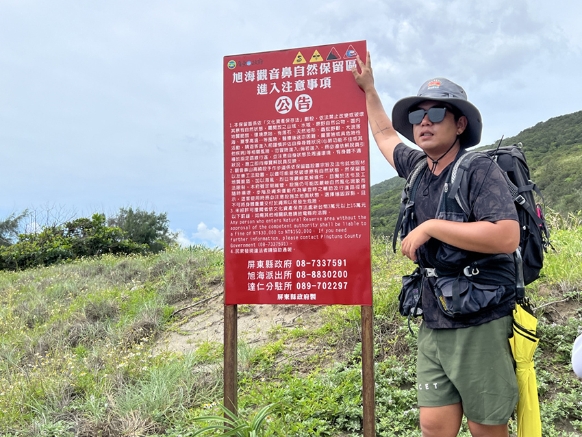

|
|
百餘年前，斯卡羅人南來北往所走過，是台灣目前僅存唯二沒有公路開發的原始海岸。 |
一座「巨手」矗立在台東縣南田村的卵石海灘上，巨手的手指捏著魚鉤與釣線牽起的一串海洋廢棄物。這是著名的「阿塱壹古道」位於台東端入口所設的裝置藝術，在去年開幕後便立刻成為尋訪古道的知名打卡點，而裝置藝術背後的創作構想，則和阿塱壹古道成為自然保留區有著相近的理念。
以阿塱壹古道之名廣為人知，位於台東縣與屏東縣交界處的這段海岸線，是由屏東縣政府於2012年所劃設「自然保留區」，是我國在各種不同保護區類別中，管制最為嚴格的一種，任何人皆不得破壞、改變保留區的現況，也因此阻擋下了「台26線」公路從南田村繼續往南開闢的計劃，為台灣保存下唯二、沒有公路開發的海岸線。
6月初與朋友相約來走阿塱壹古道，是我在2019年之後第二次造訪。與上次不同的是，我們這次是由台東端出發。當巴士停妥下車準備出發，經過一小段泥土路，到了台東與屏東縣交界的「塔瓦溪口」，視野便一片開闊。眼裡是向前延伸無止盡的太平洋，由深藍大海與鬱綠山巒所夾的海灘，則全是當地知名的「南田石」－－經年累月由海浪潮水琢磨成扁圓形的卵石。
|
|
從南田村停車處走進保留區前有段自然宜人的土徑步道。 |
裝置藝術「巨手」在南台灣璀璨豔陽的照耀下，由湛藍海天襯出美麗的排灣族傳統手紋。從網路上可以搜尋到創作巨手的加拿大藝術家Dave Hind談到，希望將永續的概念融入這個作品，因此在創作過程中，堅持使用在海岸撿拾到的漂流物與回收廢鐵，並思考人們在面對這片美麗的大海時，該如何與環境互動，進而產生保護海洋的行動。
而在這兩次走訪阿塱壹古道的路程中，也不斷刺激我和同行夥伴們的思考。比如申請進入保留區時，每15人就必須搭配一名環境教育解說員，且必須支付每位解說員一天4,000元的費用。仔細了解這個保留區的管理機制後可以發現，這不能只用「使用者付費」的觀點來看，而是基於環境「可持續性」的一種管理手段。從劃設保留區的法規來看，政府依法能限制所有人員進入，但也能以「環境教育」的目的，有條件開放一定人數進入。
|  |
|
在阿塱壹古道南端出生長大的解說員，分享介紹進入保留區的注意事項。 |
隨著接受到這些經過公部門培訓與專業認證的解說員所分享的資訊，我們不光只感受到保留區內的明媚風光、自然景緻，同時與這片山海產生更深刻的互動。甚至有些解說員會帶著他的團員，一起撿拾保留區內的海飄廢棄物，為守護這片海洋做出更直接的行動。
於是，無論該稱呼為「阿塱壹古道」，或需要被正名為「琅嶠卑南古道」，百餘年前「斯卡羅人」曾經生活過的這段海岸線，至今或多或少因為海岸侵蝕而有了些許變化，但古道仍維持著一種低度人為擾動的方式，讓我們能持續造訪，並見證它的滄桑與美麗。